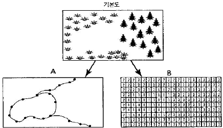
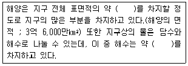
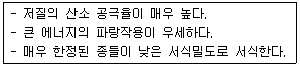

자연생태복원기사(구) (2004-12-12 기출문제)
1과목: 환경생태학개론
1. 미생물에 의해 암모니아를 질산염으로 변화게 하는 과정을 가리키는 것은?
- 탈질작용
- 질화작용
- 질소고정작용
- 암모니화작용
(정답률: 42%)

2. 다음 중 생태계의 생물적 구성요소에 해당하지 않는 사항은?
- 생산자(producer)
- 거대소비자(macroconsumer)
- 대기(atmosphere)
- 분해자(decomposer)
(정답률: 79%)
3. 다음 중 순 1차 생산력(primary productivity)를 설명한 것 중 틀린 것은?
- 식물의 호흡량을 말한다.
- 식물에 의하여 생산되는 유기물량을 말한다.
- 1차 생산력의 일정 부분은 호흡으로 사용된다.
- 태양광량이 줄어들면 1차 생산력이 줄어든다.
(정답률: 39%)
4. 육수생태계에서 독립영양 생물에 속하는 것은?
- 식물 플랑크톤
- 동물 플랑크톤
- 수서곤충
- 어류
(정답률: 74%)
5. 국유림과 수자원을 이용할 때 아무런 규제가 없다면 궁극적으로 자원의 남용과 붕괴를 초래한다. 이러한 현상을 무엇이라 부르는가?
- 공유자원의 비극
- 공유자원의 남용
- 공유자원의 저하
- 공유자원의 파괴
(정답률: 50%)
6. 다음 중 하천의 침수식생(submerged vegetation)의 주요 구성종이 아닌 식물은?
- 말즘
- 줄
- 물질경이
- 검정말
(정답률: 62%)
7. 다음 생물 종다양성에 대한 설명으로 옳지 않은 것은?
- 군집구조의 복잡한 정도를 의미한다.
- 종다양성이 적을 때 환경의 변화에 민감하여 손상받기 쉽다.
- Shannon지수, Simpson지수 등과 같이 다양도를 나타내는 지수를 통해 나타낸다.
- 한대지역과 같이 가혹한 환경조건에서는 군집의 건전한 유지를 위해 종다양성이 높아지는 경향이 있다.
(정답률: 79%)
8. 다음 생태계의 천이에 대한 설명으로 가장 거리가 먼것은?
- 생물군집의 시간적 변화과정이다.
- 천이의 최종단계는 성숙된 안정단계로서 '극상'이라 한다.
- 천이는 후기 단계로 갈수록 생산량이 호흡량보다 많아 순생산량이 높아진다.
- 초기 개척군집이 토양의 성질을 변화시켜 새로운 종이 자랄 수 있게 하고 새로 침입한 종은 다른 방식으로 환경을 변화시켜 다른 새로운 종이 자랄 수 있도록하는 과정이 반복된다.
(정답률: 82%)
9. 생물종 다양성이 감소하는 중요한 원인은 바로 서식지의 물리적 변화이다. 다음 중 서식지의 물리적 변화 과정을 바르게 설명한 것끼리 짝지어 진 것은?
- 전환 - 숲을 주택지로 전환하는 경우 분열 - 숲을 관통하는 도로에 의하여 동물 이동로가 차단되는 경우
- 전환 - 숲을 농경지로 전환하는 경우 단순화 - 하천의 준설로 생태계 파괴되는 경우
- 분열 - 도로 건설로 인하여 서식지 크기가 줄어드는 경우 전환 - 야생생물의 개체수 감소가 없는 경우
- 단순화 - 숲에 떨어진 잎과 죽은 나무를 치우는 경우 분열 - 서식지 크기가 줄어들어 완전한 군집을 이루지 못하는 경우
(정답률: 50%)
10. 연안(coast)에 대해서 틀리게 설명하고 있는 것은?
- 육지와 해양 사이의 생태적 전이대
- 해양기후 변화에 의하여 직접적으로 영향을 받는다.
- 연안생태계는 육상식생을 포함한다.
- 연안은 해안의 농경지 생태계와 무관하다.
(정답률: 60%)
11. 온대지방의 정수생태계에 대한 설명으로 가장 적당한 것은?
- 겨울철에는 표면온도 하강으로 계속적인 순환이 일어난다.
- 심수층은 산소와 영양물질이 부족하며 수심이 깊고 햇빛이 도달하지 않는다.
- 표수층은 수심이 얕은 표층으로서 햇빛이 충분히 도달 하며 광합성 작용이 활발하여 산소가 풍부하다.
- 여름철에는 성층현상이 약하여 표층수와 심층수의 순환이 심하여 깊은 곳까지 산소가 공급되나 급격한 환경 변화로 물고기가 죽는 현상이 나타난다.
(정답률: 58%)
12. 군락과 생태계 안정성의 주된 성분 3가지로 짝지어진 것은 ?
- 지속성(persistence), 불변성(constancy), 회복성(resilience)
- 선택성(facultative), 저항성(resistance), 적응성(adaptability)
- 지속성(persistence), 회복성(resilience), 저항성(resistance)
- 저항성(resistance), 적응성(adaptability), 회복성(resilience)
(정답률: 42%)
13. 토양에서 생존하는 생물로 배설물이 질소 및 영양염류가 풍부하여 토양을 비옥하게 하는 생물은?
- 흰개미
- 지렁이
- 뿌리혹박테리아
- 뱀
(정답률: 89%)
14. '식물에는 필요원소 또는 양분 각 각에 대하여 그 생육에 필요한 최소한의 양이 있다. 만일 어떤 원소가 최소량 이하이면 다른 원소가 아무리 많아도 생육할 수 없으며, 원소 또는 양분 중에서 가장 소량으로 존재하는 요소에 식물의 생육이 지배를 받는다'는 설명으로 가장 적당한 것은?
- 최대량의 법칙
- 최소량의 법칙
- 에너지 제1법칙
- 에너지 제2법칙
(정답률: 85%)
15. 일반적인 하천의 생태학적 특성을 바르게 설명한 것은?
- 하천은 물질이동의 중요한 경로로서 상류의 유ㆍ무기물질을 하류로 이동시킨다.
- 성층현상, 부영양화 등의 문제가 자주 발생한다.
- 상류는 온도가 높아 활동성이 강한 송어와 같은 어족이 서식하기 좋은 환경이다.
- 하류지역은 유속이 느려져 부유물질이 퇴적되고 수중에 영양염이 감소하게 되고 군집의 다양성이 감소한다.
(정답률: 67%)
16. 콩과식물과 뿌리혹박테리아와 같이 두종의 생물이 상부상조하는 현상은?
- 편리공생
- 상리공생
- 기생작용
- 자원이용
(정답률: 79%)
17. 다음 내용 중 생태계의 설명으로 가장 거리가 먼 것은?
- 생태계 내에는 생태계 종류에 따른 독특한 물질순환 시스템이 존재한다.
- 생태계 속에서 일어나는 물질순환은 각 단계를 거쳐 종국에는 완결되는 폐쇄계이다.
- 생태계의 물질순환은 생물이 주도권을 갖는다.
- 하나의 생태계는 어느 정도 독립성을 가지면서 주위의 생태계와 밀접한 관계를 갖고 존재한다.
(정답률: 72%)
18. 타이가(taiga) 산림 생태계의 특징으로 가장 옳은 것은?
- 활엽수가 우점하고 있다.
- 습지나 소택지가 거의 없다.
- 겨울이 길고 추우며, 생장기간인 여름은 짧다.
- 식물의 잎은 습한 지역에 맞게 적응되어 있다.
(정답률: 43%)
19. 생육지의 토양수분 함량, 영양염류 함량, 미기후 등이 이질적인 환경요인에서 흔히 나타나며 자연환경에서 가장 흔히 나타나는 개체군의 공간분포양식이다. 식물에서는 종자의 전파양식이나 무성번식에 의해 일어나며 동물은 사회적 행동에 의해 서로 비슷한 종끼리 유대관계를 형성하기 때문에 나타나는 개체군의 공간분포양식은?
- 규칙분포(uniform distribution)
- 집중분포(clumped distribution)
- 기회분포(random distribution)
- 공간분포(space distribution)
(정답률: 31%)
20. 오염된 물이나 하수에서 비교적 개체수가 많이 발견되고 실험이 용이하여 지표 미생물로 흔히 이용되는 것은?
- 곰팡이
- 조류(algae)
- 바이러스
- 대장균
(정답률: 65%)
2과목: 환경계획학
21. 환경에 영향을 미치는 행정계획 및 개발사업이 환경적으로 건전하고 지속가능하게 계획되어 수립ㆍ시행될 수 있게 하기 위한 환경친화적인 계획기법의 작성 시 포함되어야 할 사항 중 틀린 것은?
- 국가환경 기준 및 외국의 환경기준에 관한 사항
- 환경친화성 지표에 관한 사항
- 환경친화적 계획기준 및 기법에 관한 사항
- 환경친화적인 토지의 이용ㆍ관리기준에 관한 사항
(정답률: 47%)
22. 생태자연도 1등급의 내용으로 적합하지 않는 것은?
- 멸종 위기 야생동식물의 주된 서식지
- 생태계가 특히 우수하거나 경관이 수려한 지역
- 자연 원시림 또는 이에 가까운 산림 및 고산초원
- 자연공원 전체지역
(정답률: 82%)
23. 다음 중 생태관광의 기본원칙이 아닌 것은?
- 지역주민의 경제적, 사회적, 환경적 편익의 보장 및 증대
- 관광객 편의성의 증진
- 자연환경의 보전
- 관광객의 환경인식 제고
(정답률: 60%)
24. 1971년 2월 이란에서 채택된 정부간 협약으로 자연자원의 유용과 보존에 관한 내용을 담은 근대 국제 정부간 협의의 시초로 가장 적당한 것은?
- 람사협약
- 생물다양성협약
- 사막화방지협약
- 기후변화협약
(정답률: 62%)
25. 도시관리계획의 경관지구를 세분한 것이 아닌 것은?
- 자연경관지구
- 수변경관지구
- 해안경관지구
- 시가지경관지구
(정답률: 58%)
26. 수도권 정비계획법의 규정에 의한 수도권에 속하지 아니하고 광역시와 경계를 같이하지 아니한 시 또는 군으로서 도시기본계획을 수립하지 않을 수 있는 시 또는 군의 인구 규모는?
- 25만명 이하
- 20만명 이하
- 15만명 이하
- 10만명 이하
(정답률: 54%)
27. 토지환경성평가를 위해 거쳐야 하는 구체적 과정으로 가장 적당한 것은?
- 환경 적합성 분석
- 토지 적성 평가
- 사전 환경성 평가
- 생태 수용력 분석
(정답률: 47%)
28. 우리나라 국토의계획및이용에관한법률에 의한 토지적성 평가를 실시해 토지를 세부적으로 구분하는 지역은?
- 도시지역
- 준농림지역
- 관리지역
- 자연환경보전지역
(정답률: 19%)
29. 환경부에서는 주택 및 공장, 휴양관광시설 등에 대해 생태계 보전지역과 녹지자연도 일정 등급 이상의 지역은 사업 지역에서 제척하도록 하여, 자연이 양호한 지역에 무분별한 개발을 억제할 수 있는 행정적 제약을 두고 있는데, 녹지자연도의 적용 기준으로 적당한 것은?
- 9등급 이상
- 8등급 이상
- 7등급 이상
- 6등급 이상
(정답률: 54%)
30. 일정한 지역안에서 환경의 질을 유지하고 환경오염 또는 환경훼손에 대하여 환경이 스스로 수용ㆍ정화 및 복원 할수 있는 한계를 말하는 것은?
- 환경용량
- 환경훼손
- 환경오염
- 환경파괴
(정답률: 88%)
31. 생태도시의 궁극적인 목표는 도시를 자연생태계가 가지는 4가지 특성을 가지도록 계획해 지속가능한 발전이 이루어지도록 하는 것이다. 다음 중 그 목표의 특성이 다른 것은?
- 개방성
- 다양성
- 순환성
- 자립성
(정답률: 31%)
32. 도시계획에 대한 사전 환경성 검토의 주요 검토 항목에 해당되지 않는 것은?
- 계획수립 시기 및 범위의 적정성
- 관련 계획과의 부합성
- 자연생태계와의 조화성
- 시민참여 방안
(정답률: 58%)
33. 환경해설 방식에 있어서 "안내자 방식"의 장점이 아닌것은?
- 대상자와의 직접적 대화 및 토론이 가능
- 대상자별(연령, 학력등)해설 수준 선택이 편리
- 필요시 일정 프로그램의 도입 및 변경이 용이
- 특별한 해설 인력 및 조직없이 시행이 가능
(정답률: 57%)
34. 환경계획이나 설계의 패러다임 중 자연과 인간의 조화, 유기적이고 체계적 접근, 상호 의존성, 직관적 통찰력 등을 특징으로 하는 패러다임을 무엇이라 하는가?
- 데카르트적 패러다임
- 전체론적 패러다임
- 직관적 패러다임
- 뉴어버니즘 패러다임
(정답률: 31%)
35. 최근 녹지자연도를 대신하고 있는 생태자연도의 경우 구분하는 기준의 등급으로 적당한 것은?
- 1등급에서 4등급까지 4개의 등급
- 0등급에서 3등급까지 4개의 등급
- 1등급, 2등급, 3등급, 절대보전지역으로 4등급
- 1등급, 2등급, 3등급, 별도관리지역으로 4등급
(정답률: 54%)
36. 국토의계획및이용에관한법률에 근거하여, 도시지역 내 주거지역에서 100평의 땅을 가지고 있는 사람이 피로티가 없는 건축물을 신축한다면, 법상의 한도내에서 가능한 한도규제로 가장 적당한 것은?
- 바닥면적 60평의 10층 건축물
- 바닥면적 60평의 8층 건축물
- 바닥면적 70평의 10층 건축물
- 바닥면적 70평의 7층 건축물
(정답률: 34%)
37. 다음 중 기후 변화 협약의 내용이 아닌 것은?
- 이산화탄소의 급증으로 지구의 기온이 상승한다.
- 프레온 가스, 메탄, 질소산화물도 지구온난화에 기여한다.
- 사막화 진전, 농작물의 피해가 발생한다.
- 몬트리올의 정서에서 규제 대상물질을 규정하고 있다.
(정답률: 60%)
38. 국토의 난개발의 방지하고, 개발과 보전의 조화를 유도하기 위하여, 토지의 토양, 입지, 활용 가능성 등에 따라 토지의 보전 및 이용가능성에 대한 등급을 분류하여 토지용도 구분의 기초를 제공하고자 하는 것은?
- 국토 환경성평가
- 토지의 사전환경성 검토
- 토지의 적성평가
- 토지이용계획
(정답률: 72%)
39. 다음 중 국립공원이 아닌 것은?
- 설악산
- 지리산
- 한라산
- 태백산
(정답률: 34%)
40. 국토의계획및이용에관한법률에서 도시기본계획의 정비주기로 적당한 것은?
- 3년
- 4년
- 5년
- 10년
(정답률: 36%)
3과목: 생태복원공학
41. 곤충 서식처의 조성 원칙 및 고려사항 중 식생과 관련된설명으로 적합치 못한 것은?
- 나비 유충의 먹이식물과 성충의 흡밀식물 및 먹이식물, 나비와 일부 딱정벌레의 수액식물 등을 적절히 조화시켜 식재
- 관목과 교목들을 적절히 성토된 지역에 식재하고 다공질 공간과 관목으로 구성된 덤불도 식재
- 도입하는 식물들은 주변의 자생지로부터 이식
- 연못ㆍ호안에는 가급적 수생식물과 교목을 식재
(정답률: 16%)
42. 다음 목본 식물 중 질소 고정식물이 아닌 것은?
- 다릅나무
- 오리나무
- 보리수나무
- 때죽나무
(정답률: 34%)
43. 훼손지 복구에 대한 일반사항으로 가장 거리가 먼 것은?
- 녹화는 채석장, 폐광지, 토양오염지 등의 생태복원공사, 훼손된 등산로 및 임야 등의 지반 안정화와 식생복원 공사에 적용된다.
- 훼손지의 원래 식생보다는 경제성이 높은 식물을 우선적으로 선택하여 식재한다.
- 단계별 식생복원사업으로 1단계 초본류, 2단계 목본류를 식재한다.
- 침식방지를 우선적으로 고려하고, 야생동물의 서식처, 경관미의 향상 기능을 같이 고려한다.
(정답률: 54%)
44. 다음 중 양서ㆍ파충류의 이동통로 설계시 고려해야 할 사항으로 틀린 것은?
- 채식지, 휴식지, 동면지의 훼손이 발생했을 경우 인위적인 복원이 필요하다.
- 집수정 주변에 철망이나 턱을 설치하여 침입을 방지하고 탈출을 용이하게 해준다.
- 도로의 경우 차량의 높이보다 높은 교목을 설치한다.
- 횡단배수관의 경사를 완만하게 한다.
(정답률: 28%)
45. 야생동물 이동 통로의 형태 중 훼손 횡단부위가 길고 절토 지역 또는 장애물 등으로 동물을 위한 통로설치가 어려운 지역에 만들어지는 통로는?
- Culvert
- Shelterbelt
- Box
- Overbridge
(정답률: 47%)
46. 자연형 하천 복구공사에서 저수로 호안의 수층부에 적합한 공법이 아닌 것은?
- 사석버드나무섶단 공법
- 사석돌망태 공법
- 돌심기 공법
- 돌망태 공법
(정답률: 24%)
47. 생태복원을 위한 식물군집 조사방법에 해당하지 않은 것은?
- 선형의 라이센서스법
- 면에 의한 방형구법
- 점형태의 포인트법
- 띠형태의 벨트트랜섹트법
(정답률: 0%)
48. 다음 중 녹화(revegetation)를 설명하는 것 중 옳지 않은 것은?(오류 신고가 접수된 문제입니다. 반드시 정답과 해설을 확인하시기 바랍니다.)
- 파괴된 자연을 인위적으로 녹지재생을 하는 행위
- 경관이 우수한 지역의 녹지를 개발하는 행위
- 식물의 생육이 불가능한 환경조건을 개선하는 행위
- 사막화 되어버린 지역에서 녹지를 재생하는 행위
(정답률: 20%)
49. 인간에 의해서 교란되지 않은 자연림과 초원의 토양 단면 중 A0(유기물)층에 대한 설명으로 가장 적당한 것은?
- A0 층의 바로 아래에는 집적층이 있다.
- A0 층은 유기물의 분해 정도에 따라 L층(낙엽층), F층(부휴층), H층(부식층)으로 구분된다.
- A0 층은 점토, 철, 알루미늄 등의 물질이 집적되는 곳이다.
- 토양화 진전이 없고, 암석의 풍화가 적은 파쇄 물질의 층이다.
(정답률: 48%)
50. 생태복원에 있어서 우리나라 중부지방 관목 덤불림의 조성시 가장 바람직한 수종의 조합은?
- 찔레나무, 보리수나무, 산딸기
- 장구밥나무, 생강나무, 금강초롱
- 쇠뜨기, 찔레, 아카시나무
- 산딸기, 아왜나무, 느티나무
(정답률: 29%)
51. 다음은 비탈다듬기 공사에 사용되는 토사량 산출식이다. 올바른 토사량 산출식은? (단, V : 토사량(m3), A : A의 단면적, A' : A'의 단면적, L : A와 A'의 거리(m)이다.)
- V=(A+A')/2L
- V=2L/(A+A')
- V=2(A+A')/L
- V=(A+A')L/2
(정답률: 36%)
52. 생태복원을 위해 다져진 토량 18,000m3을 성토할 때 운반 토량은 얼마인가?(단, 토량변화율은 L=1.25, C=0.9이다.)
- 25,000m3
- 22,500m3
- 20,250m3
- 20,000m3
(정답률: 20%)
53. 다음 중 옥상녹화의 효과 및 장점 중에서 생태학적 장점으로서 가장 큰 것은?
- 대기정화 기능
- 도시 열섬현상 감소
- 단열 효과
- 녹음 제공
(정답률: 60%)
54. 새롭게 서식처를 조성해 주는 방법들 중 미리 결정된 설계에 온전한 경관을 포함하는 것으로서 나무를 식재하고, 관목숲을 형성하는 등의 방법으로 가장 적당한 것은?
- 정치적 서식처(Political habitats)
- 자연적 형성(Natural colonization)
- 설계자로서의 서식처(Designer habitats)
- 서식처 구조 형성(Framework habitats)
(정답률: 36%)
55. 다음 중 중력수에 대한 설명으로 틀린 것은?
- 토양 대공극에 있는 물은 토양에 보유되는 힘이 약하며 중력에 의해 쉽게 흘러내린다.
- 중력수의 이동이 거의 정지한 시점에 있어서 토양수분량을 포장용수량이라 한다.
- 중력수에 의해 차지하는 공극 즉, 포장용수량에 있어서 기상(氣相)이 되는 공극을 중력 공극이라 한다.
- 중력수는 식물에 의해 대부분 불필요하게 과잉된 상태의 수분으로 적절한 배수에 의거 제거될 수 있다.
(정답률: 25%)
56. 물에 의한 토양침식의 형태 및 유형 중 빗물침식과 관계없는 것은?
- 용출침식
- 빗방울침식
- 면상침식
- 누구침식
(정답률: 36%)
57. 생물 종 다양성의 증감에 관여하는 요소에 대한 설명 중 틀린 것은?
- 서식지 훼손 또는 간섭은 종 다양성을 감소시키거나 증가시킬 수 있다.
- 서식지가 격리되면 종 다양성은 감소한다.
- 종 다양성은 서식지의 연륜이 많을 수록 감소한다.
- 종 다양성은 서식지 면적이 클 수록 증가한다.
(정답률: 40%)
58. 생태통로의 기능과 조성에 대한 설명 중 잘못된 것은?
- 생태통로는 단편화된 생태계의 연결로 생태계의 연속성 유지에 도움을 준다.
- 생태통로는 대형 교란으로부터 피난처 역할도 한다.
- 인공적으로 조성된 구조물은 생태통로라고 볼 수 없다.
- 하천, 댐, 도로 등에 의해 생태계가 단절되는 경우 생태통로를 조성한다.
(정답률: 65%)
59. 피라미나 갈겨니의 서식을 추구하는 자연형 하천복구의 BOD(생물학적 산소요구량) 기준 목표 수질은?
- 1mg/L 이하
- 3mg/L 이하
- 6mg/L 이하
- 8mg/L 이하
(정답률: 27%)
60. 근원직경 20cm인 낙엽수를 이식하는 경우 뿌리분의 직경은? (단, 상수 d=4)
- 62cm
- 72cm
- 82cm
- 92cm
(정답률: 15%)
4과목: 경관생태학
61. 지리정보시스템(GIS)에서 기본도를 그림과 같이 A와 B 두가지의 자료유형으로 재구성하였다. A와 B 유형의 형식을 옳게 차례대로 나열한 것은?

- 벡터(vector), 래스터(raster)
- 페리메터(perimeter), 셀(cell)
- 아노말리(anomaly), 그리드(grid)
- 커브(curve), 모자이크(mosaics)
(정답률: 36%)
62. 다양한 경관의 서식처들을 연결시키는 최적의 연결망 형태가 갖추어야 할 조건 중 틀린 것은?
- 높은 수준의 우회성이 있을 것
- 통로폭이 클 것
- 연결로의 곡률이 작을 것
- 그물눈의 크기가 다양할 것
(정답률: 34%)
63. 우리나라 산촌의 경관생태에 대한 설명과 거리가 먼 것은?
- 지질ㆍ지형적 특성과 파랑에 의해 형성된 기암괴석의 절경과 자연암반에 발달한 기묘한 식생과 함께 독특한 지형이 창출한 경관이다.
- 최근 많은 지역의 산촌은 골프장, 도로 및 석산개발, 스키장 건설, 송전탑 등 인간의 다양한 경제적 욕구에 따른 광범위한 개발행위로 그 경관구조가 변하고 있다.
- 화전경작은 전통적인 산지이용의 방법으로써 독특한인문ㆍ사회적 특성을 가지고 있으며, 우리나라 산촌경관구조의 변화와 밀접한 관계를 맺고 있다.
- 인간과 자연이 연결된 생태계로서 그 존재 양식은 지형, 기후, 수문, 토양 등 물리적 환경요인 뿐만 아니라 인문ㆍ사회적 환경에 의해 큰 영향을 받아왔다.
(정답률: 39%)
64. 댐의 기능상 홍수유출을 일시적으로 지체하여 갑작스런 홍수로 인한 피해를 막기 위한 댐으로 가장 적당한 것은?
- 지체댐
- 저수댐
- 취수댐
- 다목적댐
(정답률: 48%)
65. 다음 중 생태적 동태(ecological dynamics)를 고려한 생태 계획의 유형을 지칭하는 것은?
- 적응적 계획
- 공원녹지 계획
- 지구단위 계획
- 경관 계획
(정답률: 17%)
66. 다음 중 야생동물의 이동유형에 대한 설명 중 가장 올바른 것은?
- 서식지 분할 - 야생동물이 먹이를 구하기 위해 혹은 천적으로부터 자신을 방어하기 위해 매일 혹은 주기적으로 이동하면서 서식지를 바꾸는 것
- 세력권 - 둥지를 중심으로 다른 개체들과 공동으로 사용하지 않고 자신만이 배타적으로 사용하는 고유영역
- 계절적 이동(migration) - 야생동물의 일시적인 이동이 아니라 태어난 지역을 떠나 영구히 이동하는 것
- 분산(dispersal) - 야생동물이 주기적으로 이동하는 것
(정답률: 69%)
67. 다음 중 해안 사구의 기능에 해당되지 않는 것은?
- 아름다운 경관지
- 해안 고유생물의 서식지
- 수산자원의 높은 생물량
- 해안 주변의 식수원 저장지
(정답률: 31%)
68. 지난 반세기 동안 네델란드 북해 연안과 더불어 우리나라의 서해안에서 가장 활발하게 일어났던 훼손으로 인위적으로 해안경관을 변화시켜 친환경적이지 못하고, 자연적인 해안경관을 해치게 되는 것은?
- 쓰레기 투기
- 해상 유류 유출 사고
- 간척 및 매립
- 연안의 수 많은 양식시설
(정답률: 25%)
69. 경관생태학이 기존 일반 생태학보다 치중하는 면으로 가장 적당한 것은?
- 자연환경보호 및 NGO와 연계
- 응용공학과의 연계에 의한 환경기술도입
- 수리과학 및 생명과학 등 기초 학문적 탐구에 집중
- 연구성과를 실천에 옮기려는 실천 과학적 성격
(정답률: 16%)
70. 다음 중 ( )안에 들어갈 내용으로 가장 적당한 것은?

- 50%, 50%
- 60%, 79%
- 60%, 86%
- 71%, 99%
(정답률: 31%)
71. 최근 경관생태학에 대한 관심이 높아지면서 도시림을 비롯한 농ㆍ산촌지역의 2차 식생의 중요성으로 옳게 짝지어 진 것은?
- 생물 종다양성의 보호, 환경보호림, 쾌적한 전원공간
- 목재생산, 자연휴양림, 생물서식공간
- 자연공원, 생물서식공간, 임산자원
- 퇴비생산, 버섯재배, 목재생산
(정답률: 30%)
72. 자연환경 유지ㆍ복원의 기본 유형들 중 성격이 다른 것은?
- 보전형
- 수복형
- 재현형
- 창조형
(정답률: 8%)
73. GIS(지리정보체계)가 포함하는 기본적 요소들을 바르게 순서대로 나열한 것은?
- 자료획득 - 모의실험 - 전처리 - 모델 - 결과출력
- 현장조사 - 자료획득 - 실험실분석 - 결과도출 - 자료 해석
- 자료획득 - 전처리 - 자료관리 - 조정과 분석 - 결과 출력
- 현장조사 - 자료획득 - 전처리 - 자료해석 - 결과출력
(정답률: 9%)
74. 다음 보기의 설명에 해당되는 특징을 가진 해안경관으로 가장 적당한 것은?

- 사빈
- 모래갯벌
- 자갈해안
- 암반해안
(정답률: 57%)
75. 원격탐사(remote sensing)를 환경 문제에 응용할 경우 유리한 특징이 아닌 것은?
- 정확성
- 광역성
- 동시성
- 주기성
(정답률: 24%)
76. 생태 통로(ecological corridor)의 설치에 관한 내용으로 가장 적당한 것은?
- 서식지 면적의 확대가 가능한 곳에 설치
- 서식지 사이의 연결성을 높이기 위해 설치
- 생물다양성을 높이고 번식률을 낮추기 위해 설치
- 해안 구조물에서 빈번하게 설치
(정답률: 65%)
77. 다음 중 경관을 이루는 주요 3요소가 아닌 것은?
- 바탕(matrix)
- 조각(patch)
- 통로(corridor)
- 배열(Arrangement)
(정답률: 59%)
78. 개발사업의 입지선정 단계 뿐만 아니라 환경영향평가에서 가장 근본적인 저감 대책으로도 매우 유용한 생태인프라의 구축방안으로 가장 적당한 것은?
- 희귀종의 보전 방안
- 녹도확보 방안
- 산림조성 방안
- 경관생태 네트워크 구축 방안
(정답률: 50%)
79. 조류의 전이개체군(metapopulation)에 대한 설명 중 틀린것은?
- 삼림의 크기가 커질 수록 종풍요도(species richness)가 높다.
- 비슷한 크기의 삼림에서는 삼림이 울창 할 수록 종풍요도(species richness)가 높다.
- 비슷한 크기의 삼림에서는 가장자리 밀도가 낮을 수록종풍요도(species richness)가 높다.
- 이웃 삼림과의 거리가 가까워질수록 종풍요도(species richness)가 높다.
(정답률: 57%)
80. 식물분포에 따른 세계식물구계(世界植物區系)에서 우리나라가 속하는 구계의 유형은?
- 북대식물구계계
- 구열대식물구계계
- 신열대식물구계계
- 케이프식물구계계
(정답률: 59%)
5과목: 자연환경관계법규
81. 국토의계획및이용에관한법률에 관한 설명 중 옳지 않은 것은?
- 도시기본계획은 특별시ㆍ광역시ㆍ시 또는 군의 관할구역에 대하여 기본적인공간구조와 장기발전방향을 제시하는 종합계획으로서 도시관리계획수립의 지침이 되는 계획이다.
- 광역도시계획과 도시기본계획의 내용이 광역도시계획의 내용과 다를 때에는 광역도시계획이 우선한다.
- 도시기본계획은 광역도시계획에 부합되어야 하나 도시관리계획은 반드시 광역도시계획에 부합하여야 하는 것은 아니다.
- 도시계획은 특별시ㆍ광역시ㆍ시또는 군의 관할구역에서 수립되는 다른 법률에 의한 토지의 이용ㆍ개발 및 보전에 관한 계획의 기본이 된다.
(정답률: 24%)
82. 국토기본법상의 국토계획에 포함되지 않는 계획은?
- 국토종합계획
- 도서종합계획
- 부문별계획
- 지역계획
(정답률: 10%)
83. 자연환경보전법은 멸종위기야생동ㆍ식물의 포획, 채취, 가공, 보관, 유통 등을 금지하고 있다. 다만, 환경부장관의 허가를 받은 경우 예외가 있는데 이에 해당하지 않는 것은?
- 학술연구용
- 식물원관람용
- 증식용
- 수출입용
(정답률: 50%)
84. 환경정책기본법에 포함되지 않은 사항은?
- 방사능 물질에 의한 환경오염의 방지
- 과학기술의 위해성 평가
- 전자파의 위해성 관리
- 환경성질환에 대한 대책
(정답률: 31%)
85. 환경정책기본법상의 사전환경성검토협의 대상 사업 또는 계획인 것은?
- 토지의 형질변경, 나무의 벌채 또는 흙ㆍ돌 등의 채취를 수반하지 않는 개발사업
- 자연재해대책법 제36조의 규정에 의한 재해응급대책에 관한 사업
- 환경영향평가 대상사업 중 사전환경성검토협의의 시기가 환경영향평가의 협의시기와 같은 개발사업
- 제주국제자유도시특별법 제8조의 규정에 의한 광역 시설계획
(정답률: 16%)
86. 독도등도서지역의생태계보전에관한특별법에 의한 특정도서에 대한 설명 중 틀린 것은?
- 특정도서는 사람이 거주하지 아니하거나 극히 제한된 지역에만 거주하는 섬으로서 자연생태계ㆍ지형ㆍ지질ㆍ자연환경이 우수한 독도 등 환경부장관이 지정하여 고시한 도서이다.
- 제한된 범위내에서 가축의 방목이 허용된다.
- 국가 및 지방자치단체가 허가를 받은 후 도로를 신설할 수 있다.
- 환경부장관은 자연생태계 보호를 위하여 일정기간 출입을 제한할 수 있다.
(정답률: 47%)
87. 다음 중 자연환경관계법규 중에서 환경부 소관이 아닌 법규는?
- 자연환경보전법
- 습지보전법
- 조수보호및수렵에관한법률
- 개발제한구역의지정및관리에관한특별조치법
(정답률: 27%)
88. 자연공원법에 의한 자연공원의 용도지구에 포함되지 않는 지구는?
- 자연경관지구
- 자연보존지구
- 자연환경지구
- 집단시설지구
(정답률: 22%)
89. 습지보전법상의 습지지역 지정 등에 관한 서술 중 틀린것은?
- 환경부장관 또는 해양수산부장관이 지정할 수 있는 습지지역에는 습지보호지역, 습지주변관리지역, 습지 개선지역이 있다.
- 습지보호지역을 지정할 때에는 시ㆍ도지사 및 지역주민의 의견을 들은 후 관계중앙행정기관의 장과 협의하여야 한다.
- 습지주변관리지역의 면적은 당해 습지보호지역 면적의 3분의 1 이내로 하여야 한다.
- 환경부장관 또는 해양수산부장관은 습지보호지역 중 습지의 훼손이 심화될 우려가 있는 지역은 습지개선지역으로 지정할 수 있다.
(정답률: 16%)
90. 국토의계획및이용에관한법률에 의한 국토의 용도지역으로 옳게 나열한 것은?
- 도시지역, 관리지역, 농림지역, 자연환경보전지역
- 도시지역, 준농림지역, 농림지역, 자연환경보전지역
- 도시지역, 농림지역, 자연환경보전지역,녹지지역
- 보전지역, 관리지역, 준농림지역, 준도시지역
(정답률: 47%)
91. 자연환경보전법 시행령에 지정된 생태계 위해 외래 동식물이 아닌 것은?
- 황소개구리
- 퉁사리
- 파랑볼우럭
- 큰입배스
(정답률: 44%)
92. 산지관리법상 산지에 포함되는 토지로서 옳은 것은?
- 집단적으로 생육한 입목단지내의 유지 및 제방
- 집단적으로 생육한 입목단지내의 초지조성지
- 집단적으로 생육한 입목 단지 내의 한계농지
- 집단적으로 생육한 입목이 일시 상실된 토지
(정답률: 8%)
93. 개발제한구역의지정및관리에관한특별조치법상의 개발제한 구역의 지정대상지역으로 적합하지 않는 것은?
- 도시의 무질서한 확산 또는 인접한 도시의 시가지로의 연결을 방지하기 위하여 개발을 제한할 필요가 있는 지역
- 도시지역의 자연환경 및 생태계를 보전하고 건전한 생활환경을 확보하기 위하여 개발을 제한할 필요가 있는 지역
- 도시의 정체성 확보 및 적정한 성장관리를 위하여 개발을 제한할 필요가 있는 지역
- 국가보안상 도시개발을 제한할 필요가 있는 지역
(정답률: 0%)
94. 자연환경보전법상의 용어 정의가 잘못된 것은?
- 생물다양성이라 함은 육상생태계, 해양과 기타 수생 생태계와 이들의 복합생태계를 포함하는 모든 원천에서 발생한 생물체의 다양성을 말하며, 종내ㆍ종간 및 생태계의 다양성을 포함한다.
- 소생태계라 함은 생물다양성을 높이고 야생동ㆍ식물의 서식처간의 이동 가능성을 높이거나 특정한 생물종의 서식조건을 개선하기 위하여 조성하는 생물서식공간을 말한다.
- 자연유보지역이라 함은 멸종위기종 야생동ㆍ식물의 서식처로서 중요하거나 생물다양성이 풍부하여 특별히 보전할 가치가 큰 지역을 말한다.
- 생태ㆍ자연도라 함은 산ㆍ하천ㆍ습지ㆍ호소ㆍ도시ㆍ해양 등에 대하여 자연환경을 생태적 가치, 자연성, 경관적 가치 등에 따라 등급화하여 작성된 지도를 말한다
(정답률: 29%)
95. 농지법상의 농업진흥구역안에서 가능한 토지이용행위에 속하지 않는 것은?
- 매장문화재의 발굴, 비석, 기념탑, 기타 이와 유사한 공작물의 설치
- 하천, 제방 등 국토보전시설의 설치
- 문화재의 보수, 복원, 이전
- 폐수배출시설의 설치
(정답률: 36%)
96. 국토기본법에 명시된 "환경친화적 국토관리"를 위하여 국가 및 지방자치단체가 해야 할 일에 속하지 않는 것은?
- 국토에 관한 계획이나 사업을 수립, 집행함에 있어서 자연환경과 생활환경에 미치는 영향을 사전에 고려하여야 하며, 환경에 미치는 부정적인 영향이 최소화될 수 있도록 하여야 한다.
- 국토의 무질서한 개발을 방지하고 국민생활에 필요한 토지를 원활하게 공급하기 위하여 토지이용에 관한 종합적인 계획을 수립하고 이에 따라 국토공간을 체계적으로 관리하여야 한다.
- 산, 하천, 호소, 연안, 해양으로 이어지는 자연생태계를 통합적으로 관리, 보전하고 훼손된 자연생태계를 복원하기 위한 종합적인 시책을 추진함으로써 인간이 자연과 더불어 살 수 있는 쾌적한 국토환경을 조성하여야 한다.
- 국제교류가 활발히 이루어질 수 있는 국토여건을 조성함으로써 대륙과 해양을 잇는 국토의 지리적 특성이 최대한 발휘되도록 하여야 한다.
(정답률: 44%)
97. 국토기본법상의 국토조사에 포함되지 않는 것은?
- 지형ㆍ지물 등 지리정보에 관한 사항
- 농림ㆍ해양ㆍ수산에 관한 사항
- 인구ㆍ산업에 관한 사항
- 방재 및 안전에 관한 사항
(정답률: 25%)
98. 습지보전법상 습지보전기본계획에 포함되어야 할 사항이 아닌 것은?
- 습지보호지역 지정에 관한 계획
- 습지조사에 관한 사항
- 습지보전을 위한 국제협력에 관한 사항
- 습지의 분포 및 면적과 생물다양성에 관한 사항
(정답률: 0%)
99. 자연환경보전법상 멸종위기야생동식물로 지정된 것은?
- 한란
- 구렁이
- 금개구리
- 남생이
(정답률: 24%)
100. 산지관리법에 의해 산지전용제한지역이 될 수 없는 산지는?
- 주요 산줄기의 능선부로서 자연경관 및 산림생태계의 보전을 위해 필요한 산지
- 지역주민의 임산물 소득을 위해 보전이 필요한 산지
- 명승지, 유적지 그 밖에 역사적ㆍ문화적으로 보전 가치가 있다고 인정되는 산지
- 산사태 등 재해발생이 특히 우려되는 산지
(정답률: 43%)